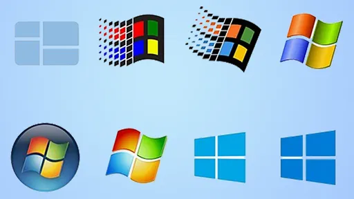

O que é um software?
Um software é um serviço computacional utilizado para realizar ações nos sistemas de computadores. Ou seja: Um software é todo programa presente nos diversos dispositivos (computadores, celulares, televisores, entre outros).
Exemplos:Chrome, calculadora, Windows Media Player, Microsoft Word, AutoCAD, Adobe Photoshop.
O que é um sistema operacional?
Sistema operacional é um software, ou um conjunto de softwares, que tem como papel gerenciar e administrar todos os recursos presentes em um sistema.
Exemplos: Dos, Unix, Linux, Mac OS, OS-2, Windows NT.
O que é software de programação?
Softwares de programação são softwares que permitem que programadores criem outros programas, através do uso de linguagens de programação.
Exemplos:Java, PHP, Pascal, C+, C++
O que é software de sistema?
Os softwares de sistema são os responsáveis pelos sistemas operacionais de todos os dispositivos e auxiliam os usuários em seu uso, de forma visual e através de comandos.
Exemplos:Windows, Android, iOS.

O que é software de aplicação?
O software de aplicação é criado, em regra, para executar tarefas específicas tal como o processamento de texto, reprodução de áudio.
Exemplos:Microsoft Word, Spotify, Calculadora, Instagram, TikTok.
O que é software livre?
O software livre é um movimento político e filosófico que preza pela liberdade de acesso do código fonte de qualquer software pela comunidade de usuários.
Exemplos: o Linux, Firefox, LibreOffice, Audacity e o WordPress.
O que é software web ou web app?
Web Software é um software que você usa pela Internet com um navegador web
Exemplos:Google Workspace, incluindo Google Docs, Google Slides, Google Sheets e armazenamento em nuvem.
O que é software de inteligência artificial?
Os softwares de inteligência artificial, ou software IA, imitam o comportamento humano e os padrões de aprendizado. Um programa de inteligência artificial pode ser utilizado em várias áreas de negócios, desde atendimento ao cliente e vendas
Exemplos: Alexa e Siri, algoritmos de redes sociais, ferramentas de reconhecimento facial como Face ID.

O que é windows?
O Microsoft Windows (também conhecido como Windows ou Win) é um sistema operacional gráfico desenvolvido e publicado pela Microsoft.Ele contempla uma forma de armazenamento de arquivos, execução de software, possibilidade de jogar, assistir a vídeos e se conectar à Internet.
Windows1.0
O Windows 1.0 teve o lançamento em novembro de 1985 com uma interface gráfica de 16 bits. Na época, o desenvolvimento foi elaborado por Bill Gates e executado em cima do MS-DOS.Já na divulgação percebia a necessidade do uso de um mouse para navegação, como dispositivo de entrada, e não os teclados.
Exemplos:já contava com um editor de texto, jogo Reversi, agenda, calculadora e o Paint para utilização.
Windows2.0
O lançamento do Windows 2 em dezembro de 1987. A principal diferença entre a versão anterior foi a possibilidade de sobreposição das janelas. Também foram inserido, os ícones e ações de minimização e maximização das janelas, além dos atalhos de teclado e o suporte a VGA.Outro avanço foi o painel de controle, que reuniu todas as funcionalidades em somente um lugar.
Exemplos:o Microsoft Word (editor de texto) e o Excel (editor de planilhas).
Windows2.1
O Windows 2.1 foi divulgado em 1989 nas edições 286 e 386. Ele veio com algumas mudanças em relação ao gerenciamento de memória, suporte AppleTalk e impressão mais célere com drivers atualizados para as impressoras.
Windows3.0
No ano de 1990 aconteceu mais um lançamento, o Windows 3 que exigia um disco rígido. Naquele momento, o sistema operacional tinha uma interface visual mais colorida e moderna em relação aos anteriores. Para se ter uma ideia, a versão suportava 256 cores.Os usuários também poderiam contar com o Solitaire, como se fosse uma ferramenta para treinar o uso do mouse.
Windows4.0
é a quarta versão do sistema operacional Microsoft Windows NT, lançado em 1996. É um sistema Windows de 32 bits disponível para estações de trabalho e servidores com interface gráfica semelhante ao Windows 95.
Windows95
O Windows 95 (original com o codinome Chicago), lançado em agosto daquele ano, veio com o botão e o menu Iniciar. Também foi criado o conceito de “plug and play”, onde fazia a conexão de algum periférico e o sistema operacional encontrava um driver apropriado para ele funcionar.Nessa versão também tinha o ambiente de 31 bits, a barra de tarefas e outras funcionalidades. Aqui ele era multitarefa e mais estável.

Windows98
O Windows 98 aprofundou a revolução que o seu antecessor começou. Disponibilizado em junho de 1998, ele era mais estável, tinha suporte a mais de um monitor e componentes USB, particionamento do HD, serviço Outlook de e-mail, modo de hibernação e mais.

Windows2000
O Windows 2000 foi lançado em fevereiro de 2000 e consolidou o fim definitivo da nomenclatura "NT". Sua menção é importante,pois além de ter trazido recursos importantes trouxe novos sistemas de segurança.

Windows XP
O Windows XP foi lançado em outubro de 2001 e à época era bastante inovador, principalmente no quesito visual. Ele apostou em um menu Iniciar verde e barras azuis que se tornaram bastante populares entre os usuários.
Ele popularizou programas do Windows Media Player, já que CDs poderiam ser lidos pelos drives e tocados no programa. Seu wallpaper, uma fotografia de planícies na Califórnia, tornou-se uma das imagens mais famosas da era da internet.

Windows Vista
Ele foi lançado em novembro de 2006, apresentando uma nova estética de janelas transparentes e melhores recursos de segurança.Apesar disso, ele não foi tão bem recepcionado porque muitos usuários reclamavam que ele deixava o computador lento, o que fez muita gente continuar usando o XP por mais um bom tempo.

Windows7
Lançado em julho de 2009, o Windows 7 foi recepcionado de maneira um pouco melhor na comparação com o Vista e melhorou tanto o esquema visual quanto o desempenho do sistema operacional.
se destacou por apresentar recursos como suporte a telas touch screen e multi-touch, leitura de Blu-ray, Windows Defender, modo Windows XP e mais.

Windows8
foi lançado em outubro de 2012 e remodelou por completo a interface do sistema operacional, trazendo um novo sistema de widgets, janelas retangulares e a remoção do clássico menu iniciar, que foi bastante polêmica.
era compatível com o Windows Phone, o sistema operacional para celulares da Microsoft, e tinha integração com vários apps mobile.

Windows10
O software mais recente da Microsoft foi lançado em julho de 2015. Ele trouxe de volta o menu Iniciar e tem como um dos principais diferenciais o foco multimídia, que pode ser visto na integração com o Xbox, notebooks e tablets

Windows11
um visual mais moderno, mais segurança e velocidade, bem como um novo método de organização de janelas. Além disso, pela primeira vez na história, aplicativos Android estarão presentes na Microsoft Store, o que marcará o início de uma nova era de integração entre ecossistemas de apps.

Linux Mint
Linux Mint é uma distribuição Linux criada a partir de uma comunidade baseada no Ubuntu. É amada por pessoas usuárias casuais e profissionais na área da tecnologia. Mesmo abandonado o suporte a versão 20 do Snap, o Mint ainda é bem popular.

Linux Ubuntu
Linux MinDesenvolvido por uma empresa chamada Canonical, o Ubuntu é baseado em um dos muitos derivados do Linux Debian. Esse software chegou ao mercado em 2004. As pessoas programadoras na época perceberam os destaques do sistema e sua facilidade na programação. A interface de linha de comando permitia que fosse usada uma sintaxe mínima para escrever programas. O Ubuntu tem três versões, todas desenvolvidas para diferentes propósitos. t é uma distribuição Linux criada a partir de uma comunidade baseada no Ubuntu. É amada por pessoas usuárias casuais e profissionais na área da tecnologia. Mesmo abandonado o suporte a versão 20 do Snap, o Mint ainda é bem popular.

Kali Linux
Offensive Security é a empresa responsável pelo Kali Linux. Ele por si só é uma distro Linux baseada em Debian. Foi projetado para ajudar principalmente profissionais da área de segurança com seus inúmeros testes.

Manjaro Linux
Manjaro Linux é um sistema operacional rápido, amigável e voltado para desktop baseado no Arch Linux.

Linux Debian
Debian é a distribuição mais antiga e mais popular do Linux. Como qualquer outro distro de peso, fornece uma ambientação muito agradável e rápida. Atualmente, sua última versão é a 11, que também é chamada de Bullseye.

Puppy Linux
Puppy Linux é mais uma distribuição Linux. A diferença aqui é que o Puppy é extraordinariamente pequeno, mas cheio de recursos. O Puppy inicializa em um ramdisk e, ao contrário das distribuições de live CD que tem que extrair coisas do CD, ele carrega na RAM. Isso significa que todos os aplicativos começam em um piscar de olhos e respondem à entrada instantaneamente.

Linux OpenSUSE
O OpenSUSE é mais uma das distribuições Linux que tem como objetivo fornecer uma interface moderna e rápida para pessoas usuárias de desktop e desenvolvedoras de todo mundo.

Linux Lite
Linux Lite é uma distribuição Linux amigável para iniciantes baseada no lançamento de suporte de longo prazo (LTS) do Ubuntu e utilizando o desktop XFCE.

MX Linux
MX Linux é uma distribuição Linux feita para desktop baseada na branch “Stable” do Debian e é um empreendimento cooperativo entre o antiX e as antigas comunidades MEPIS Linux.

Linux CentOS
O Linux CentOS é mais um sistema operacional gratuito que tem como objetivo criar um ecossistema de código aberto confiável. Ele é baseado no RHEL, e é uma das alternativas do Red Hat Enterprise Linux por ser gratuito.

Arch Linux
Arch Linux é a distribuição que foi projetada para pessoas usuárias avançadas ou especialistas em Linux. Sendo possível configurar e personalizar o sistema da maneira que a pessoa usuária quiser. Podemos dizer também que o Arch é voltado para pessoas que gostam de ter controle sobre o seu sistema operacional.

Linux Zorin OS
Zorin OS é uma distribuição Linux baseada no Ubuntu projetada especialmente para iniciantes no Linux. Possui uma interface gráfica de usuário semelhante ao Windows e muitos programas semelhantes aos encontrados no Windows.

Linux Slackware
O lançamento oficial do Slackware Linux foi feito por Patrick Volkerding e é um sistema operacional Linux avançado. Foi projetado com o objetivo de ser um sistema fácil de usar e é principalmente estável.

Oracle Linux
O Oracle Linux é uma distribuição Linux para a classe empresarial e é suportada pela Oracle que a constrói a partir dos pacotes do Red Hat Enterprise Linux (RHEL).

Elementary OS
Alguns de seus recursos mais interessantes incluem um ambiente de área de trabalho personalizado chamado Pantheon e muitos aplicativos personalizados, incluindo fotos, músicas, vídeos, calendário, terminal, arquivos e muito mais. Ele também vem com alguns aplicativos familiares como o navegador Epiphany e um fork do Geary Mail.

Linux Fedora
Fedora dentre as distribuições linux é a que mais se destaca por ser realmente simples e prover uma grande quantidade de aplicativos previamente instalados. Isso a torna uma distribuição muito amigável e que facilita a entrada de novas pessoas usuárias. É flexível e poderoso, baseado no Red Hat, também é utilizado como ambiente de teste da transição do Red Hat. Foi feito tanto para sistemas de desktop, servidores e ecossistemas IoT. É utilizado principalmente para fins de desenvolvimento e muito útil para pessoas desenvolvedoras e estudantes.

Tails Linux
The Amnesic Incognito Live System (Tails) é uma distro baseada em Debian com o objetivo de fornecer anonimato completo na Internet.

Linux Raspbian
Raspberry Pi OS (anteriormente Raspbian) é um sistema operacional gratuito baseado no Debian e otimizado para o hardware do Raspberry Pi (a arquitetura do processador ARMHF).